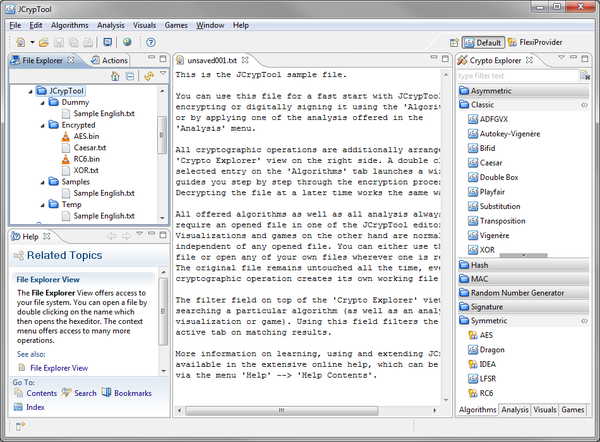

The Default Perspective is the main perspective, it is document-oriented (or file-oriented). This perspective allows easy access to almost all JCrypTool functionality.
The File Explorer view on the left side provides easy access to the file system. As an alternative the default actions to open (save/create) files are available in the File menu and the toolbar. Use the Crypto Explorer view on the right side for easy access to all available (installed) cryptographic operations (in this persepctive). The menu Algorithms in the menu bar contains the same entries as the Algorithms view in the Crypto Explorer.

This shows the file-oriented concept used all over JCrypTool: Open a file first and then execute the selected cryptographic operation on this file. The original file always remains untouched; every operation generates a new, temporary file. This concept normally requires that you open a file first before you can execute a cryptographic operation.
However not all cryptographic operations do require an opened file in one of the editors: Visualizations and Games for example are opened in full-screen view, without any reference to an editor.